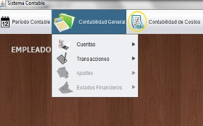
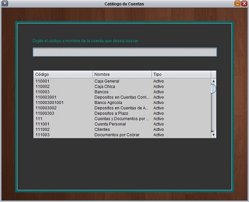
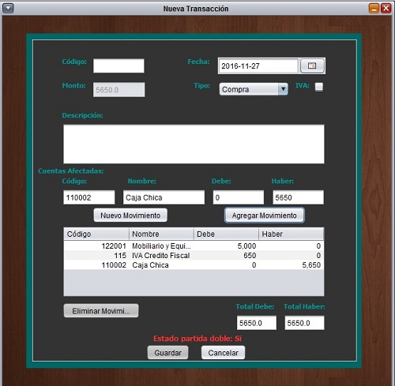
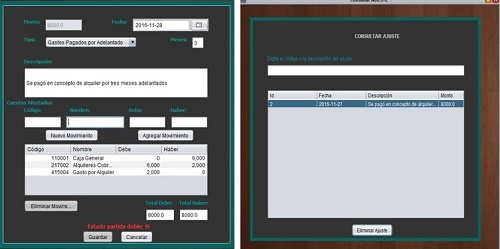
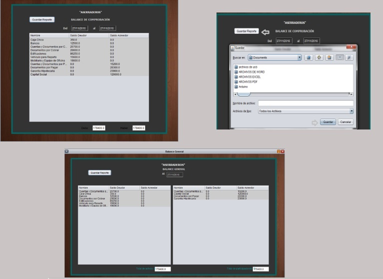

En el menú Contabilidad General podemos encontrar estas opciones, las cuales dos de ellas solamente se habilitan al cierre del período contable, mientras el período contable no acabe solo podremos agregar y consultar las cuentas del catálogo y realizar transacciones.

Para consultar el catálogo de cuentas, se debe seleccionar la opción Cuentas luego la opción Consultar Catálogo de Cuentas, y de esta forma podremos visualizar el catálogo y buscar una cuenta específica en el filtro de datos; en la opción Gestionar Cuentas podremos agregar una cuenta al catálogo para ello damos un clic en la opción nuevo y automáticamente los campos se habilitan para ingresar los datos, luego damos clic en agregar cuenta y esta se agrega al catálogo automáticamente.

Si lo que se quiere es la opción de Transacciones, seleccionamos la opción Nueva Transacción, en la cual tendremos que realizar los siguientes pasos:

De manera similar a la de ingresar transacciones ingresamos los ajustes, esta opción nos aparecerá habilitada hasta que hayamos cerrado el período contable, además podremos consultar las transacciones y los ajustes realizados.

La última opción de este menú son los Estados Financieros, los cuales se habilitarán hasta que se haya cerrado el período contable, aquí se encuentran los cuatro estados entre ellos están el Balance General y el Balance de Comprobación además se encuentra la opción de Guardar Reporte, en el cual podremos elegir un directorio en la computadora y guardar nuestro reporte del período
